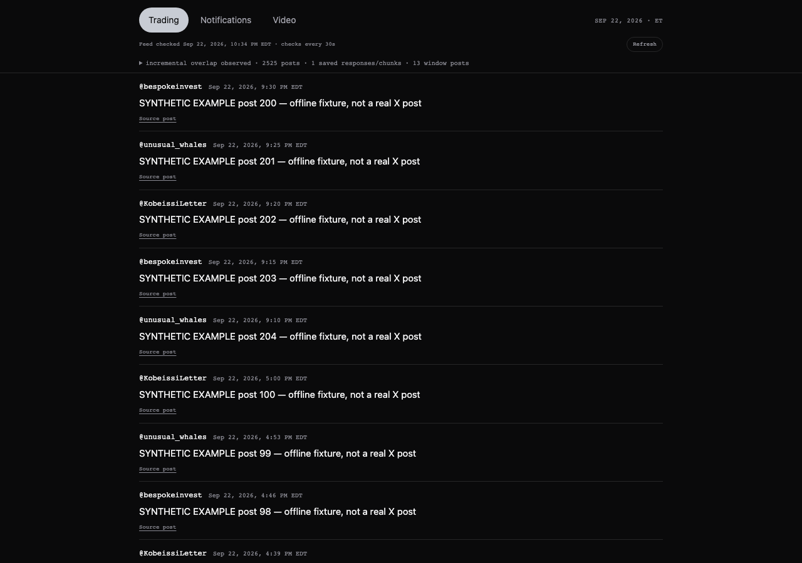
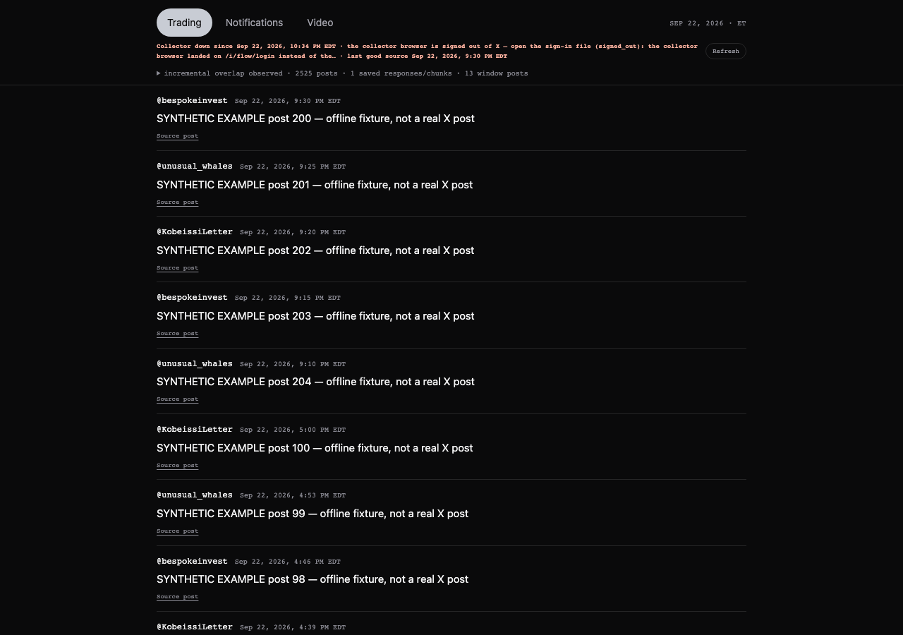
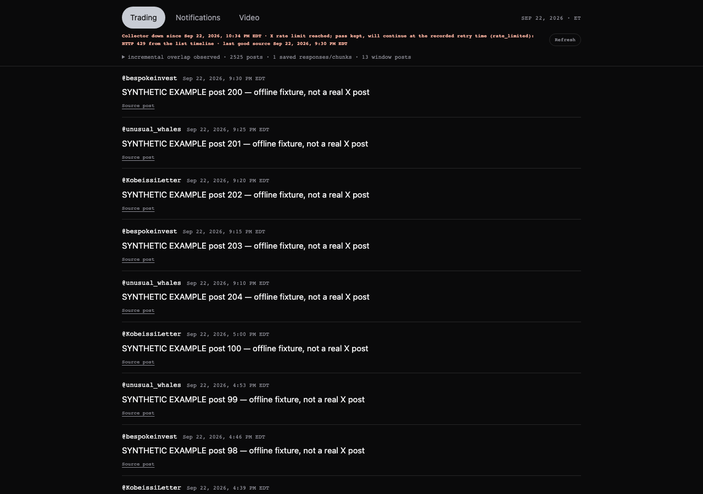
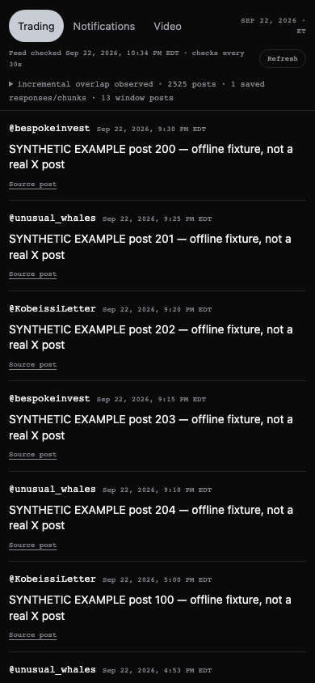

Linear SCI-5 · branch hub/xfeed-program-20260922 from production 4c1466c · worktree /Users/alanharvey/SCINTILLA 0.5/_worktrees/hub-xfeed-program-20260922 · nothing pushed, nothing deployed.
What this proves and does not. Everything below was exercised on the MacBook against a synthetic Trading list (an offline fixture that answers the same GraphQL shapes X answers). No live capture was made: no signed-in collector profile exists yet, and I never borrow Alan's Chrome. The last real source pass is still the one from 8 Sep 2026, 19:10 UTC. The program is built, tested (105/105) and rehearsed end-to-end offline; the first live run is the one human sign-in away.
The collector was three good pieces (a loopback intake, a trusted browser-cycle helper, a publisher) driven by a fourth that was never a program: a Codex chat heartbeat pasting the helper into a CUA browser session every five minutes. When that session and its tab group died on 8 Sep the raw feed stopped advancing; the heartbeat kept writing 1,586 "unchanged, awaiting repair" receipts until 16 Sep and then stopped too. The last pending pass also hit a real bug (the previous frontier post sat inside a conversation module the continuity check did not recognise); that fix and the resume-record fix were already written and tested on 19–22 Sep but never composed onto production. Both are the first two commits of this branch.
| Piece | File | Changed? |
|---|---|---|
| Program (the new driver) | scripts/xfeed-program.mjs — run, sign-in, status | new |
| Trusted cycle helper (cursor chain, chunking, resume, finish) | scripts/xfeed-browser-cycle.js | unchanged; loaded into a VM context and handed Playwright-backed source/ui/CDP adapters |
| Loopback intake + publication | scripts/xfeed-capture-server.mjs, scripts/xfeed-publish.mjs | one flag added: --stale-after-seconds (so a six-hour cadence is not called stale after ten minutes); publication path untouched |
| Loud failure to the public feed | scripts/xfeed-collector-status.mjs (the documented status command, run as a child with --env-file) | unchanged |
| X Desk wording | xfeed/model.mjs freshness(), xfeed/desk.css | error/stale states now say the reason and the last good source time |
| Schedule | xfeed/program/com.alanharvey.scintilla-xfeed-collector.plist | new |
| Installer (iMac) and sign-in click | xfeed/program/install-imac.sh, xfeed/program/Sign-in-to-X-collector.command | new |
| Tests and offline proof | tests/xfeed-program.test.mjs, tests/fixtures/xfeed-program/*.json, tests/manual/xfeed-program-proof.mjs | new |
One run = one source pass: (1) reuse the intake if one already serves this runtime on 127.0.0.1:8766, else start one for the run; (2) if the heartbeat holds a future collector_retry_at, do nothing and say so; (3) open the Trading list in the collector's own persistent Chrome profile, read the timeline responses through CDP, save every chunk through the intake form, page older until the intake reports the previous frontier inside a verified cursor chain, then finish('overlap'); a first pass in an empty runtime finishes its window, a timeline that ends first finishes as timeline_end; (4) budgets: 60 pages / 25 min by default, --catch-up = 600 pages / 50 min for the first run after the two-week gap. A pass stopped by a budget stays pending and is reported; nothing half-done is published.
launchd StartCalendarInterval at 06:30, 10:30, 14:30, 18:30 local time on the iMac (America/New_York), RunAtLoad off, GUI session only (headed Chrome in the collector profile). Every run writes <runtime>/program-health.json (last run with its meaning, last good pass, next four slots), a per-run receipt under <runtime>/runs/program-…/receipt.json, and a daily log under <runtime>/logs/. node scripts/xfeed-program.mjs status prints them. The intake's stale window is set to 6 h 30 min so the desk only says "silent" when a slot was actually missed.
xfeed/program/install-imac.sh there (or run it from the copied hub after step 1 of the script) and run zsh install-imac.sh. It rsyncs the collector code and the operational ledger from the MacBook over the existing SSH into ~/Scintilla-Collector/{hub,runtime}, runs npm install (@vercel/blob) and npm install --no-save playwright@1.62.1, writes and lints the plist, bootstraps it into gui/501, and puts the sign-in file on the Desktop. Node is present on the iMac at /usr/local/bin/node (v25.9); Chrome 153 is at /Applications/Chrome.app (the program finds either Chrome bundle name)..env.local in ~/Scintilla-Collector/hub/. The installer and I never copy it. Without it, passes finish locally and the public X Desk does not advance.cd ~/Scintilla-Collector/hub && node scripts/xfeed-program.mjs run --catch-up --runtime-dir ~/Scintilla-Collector/runtime --profile "~/Library/Application Support/Scintilla/xfeed-collector-profile".keep-scintilla-x-feed-current (it is dead but still defined) so there is exactly one writer, and stop treating the MacBook's _orchestration/xfeed-live/runtime as live once it has moved.launchctl kickstart -k gui/501/com.alanharvey.scintilla-xfeed-collector. Remove: launchctl bootout gui/501/com.alanharvey.scintilla-xfeed-collector.The .command opens only the collector's own profile (~/Library/Application Support/Scintilla/xfeed-collector-profile) on x.com/login, via node scripts/xfeed-program.mjs sign-in (falls back to plain Chrome on the same profile directory if the program is not installed yet). Alan signs in, closes the window, and every scheduled run reuses that session. No cookie is ever read, exported or copied by anything here.
When the browser is signed out, X answers 429 or an error, the list loads without a timeline (layout change), paging stalls, a budget runs out, the intake cannot start, or the program crashes, the run publishes that state over the last good feed through the documented status command. The X Desk status line then reads, for example:
Collector down since Sep 22, 2026, 10:31 PM EDT · the collector browser is signed out of X — open the sign-in file (signed_out): … · last good source Sep 22, 2026, 9:30 PM EDT
Collector silent · no run since <time> · last good source <time>
For 429 the actual x-rate-limit-reset instant is recorded as the retry time and the next run waits for it. The receipt panel keeps the full text.
105/105 xfeed tests pass on the branch (node --test tests/xfeed-*.test.mjs). The proof script ran the real program (headless Chrome 153, real intake, temporary runtime seeded by the intake's own --initialize) through four fixtures; all five expectations held: first pass finished as initial_window after 3 pages; recurring pass finished on overlap after observing the previous frontier on page one; signed-out published collector_status: error with the words; 429 kept the pass and recorded collector_retry_at 2026-09-23T08:00:00Z; the last good pass survived both failures in the health file.




--headless exists but is unproven against X).timeline_end with the gap on record; if paging stalls without an end marker the run reports stalled_without_termination and keeps the pass.plutil -lint); tests ran on Node 26.8 (MacBook), the iMac has Node 25.9.